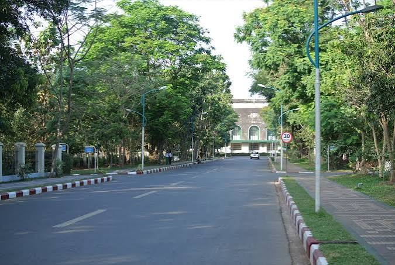

About Yangon University
ရန်ကုန်တိုင်းဒေသကြီး၊ ကမာရွတ်မြိုနယ်၊ အင်းလျားကန်ဘောင်လမ်းတွင် တည်ရှိပါသည်။
နိုင်ငံအတွက် လိုအပ်သော ခေါင်းဆောင်မှု အရည်အချင်းရှိသည့် လူ့စွမ်းအားအရင်းအမြစ်များ မွေးထုတ်ပေးရန်၊ ဝိဇ္ဇာနှင့် သိပ္ပံပညာရပ်များတွင် ထူးချွန်သော ပညာရှင်များ ပေါ်ထွက်လာစေရန်နှင့် နိုင်ငံတကာအဆင့်မီ သုတေသနလုပ်ငန်းများကို ဖော်ဆောင်ရန် ဖြစ်ပါသည်။
၁၈၇၈ ခုနှစ်တွင် တည်ထောင်ခဲ့သော ရန်ကုန်ကောလိပ် (Government High School မှ အဆင့်မြှင့်တင်ခဲ့ခြင်း) မှ စတင်ခဲ့ပြီး မြန်မာနိုင်ငံ၏ သက်တမ်းအရင့်ဆုံးနှင့် အထင်ရှားဆုံးသော တက္ကသိုလ်ကြီး တစ်ခုဖြစ်ပါသည်။
အင်္ဂလိပ်ဘာသာစကားကို အဓိကသင်ကြားရေးဘာသာစကားအဖြစ် အသုံးပြုပြီး ဘာသာရပ်ဆိုင်ရာ အထူးပြုသင်တန်းများကို စနစ်တကျ သင်ကြားပေးလျက်ရှိပါသည်။
ရန်ကုန်တက္ကသိုလ် (YU) သည် နိုင်ငံတကာတက္ကသိုလ်များ၊ သုတေသနအဖွဲ့အစည်းများနှင့် ပညာရေးဆိုင်ရာ ပူးပေါင်းဆောင်ရွက်လျက်ရှိပြီး ဒေသတွင်းနှင့် နိုင်ငံတကာ အဆင့်မီ အရည်အသွေးအာမခံချက် အဖွဲ့အစည်းများနှင့်လည်း ချိတ်ဆက်ဆောင်ရွက်လျက်ရှိပါသည်။ တက္ਕသိုလ်မှ မွေးထုတ်ပေးလိုက်သော ဘွဲ့ရပညာရှင်များသည် လက်ရှိတွင် နိုင်ငံတော်၏ ပညာရေး၊ သုတေသန၊ အုပ်ချုပ်ရေးနှင့် နိုင်ငံတကာဆက်ဆံရေးကဏ္ဍ အသီးသီး၌ အရေးပါသော ဦးဆောင်နေရာများတွင် တာဝန်ထမ်းဆောင်လျက်ရှိပါသည်။
Degree Programs
ပေးအပ်သည့် ဘွဲ့များနှင့် သင်တန်းများ
ကျောင်းသားများ၏ အရည်အချင်းနှင့် လုပ်ငန်းခွင်လိုအပ်ချက်အပေါ် မူတည်၍ သင်တန်းအမျိုးအစား စုံလင်စွာ ဖွင့်လှစ်ပေးထားပါသည်။
ရန်ကုန်နည်းတက္ကသိုလ် (YU) တွင် ဝိဇ္ဇာဘာသာရပ်များ(Arts)၊ သိပ္ပံဘာသာရပ်များ (Sciences)၊ ဥပဒေပညာ၊ နိုင်ငံတကာဆက်ဆံရေးပညာ၊ စိတ်ပညာနှင့် လူမှုရေးသိပ္ပံဘာသာရပ်များကို အဓိကထား သင်ကြားပေးပါသည်။-
Undergraduate Programs
- မြန်မာစာ (Myanmar)
- အင်္ဂလိပ်စာ (English)
- သမိုင်း (History)
- ပထဝီဝင် (Geography)
- နိုင်ငံတကာဆက်ဆံရေးပညာ (International Relations)
- နိုင်ငံရေးသိပ္ပံ (Political Science)
- ဒဿနိကဗေဒ (Philosophy)
- စိတ်ပညာ (Psychology)
- မနုဿဗေဒ (Anthropology)
- ရှေးဟောင်းသုတေသနပညာ (Archaeology)
- အရှေ့တိုင်းပညာ (Oriental Studies)
- စာကြည့်တိုက်နှင့် သုတေသနပညာ (Library and Information Studies)
- သင်္ချာ (Mathematics)
- ရူပဗေဒ (Physics)
- ဓာတုဗေဒ (Chemistry)
- ရုက္ခဗေဒ (Botany)
- တိရစ္ဆာန်ဗေဒ (Zoology)
- ဘူမိဗေဒ (Geology)
- စက်မှုဓာတုဗေဒ (Industrial Chemistry)
- စာရင်းအင်းပညာ (Statistics)
- အဏုဇီဝဗေဒ (Microbiology)
- ဇီဝဓာတုဗေဒ (Biochemistry)
- ပတ်ဝန်းကျင်လေ့လာရေးပညာ (Environmental Studies)
- Master of Science (M.S)
- Master of Arts (MA)
- MRes Programs in respective Science and Arts subjects
- နိုင်ငံတကာဥပဒေပညာ ဒီပလိုမာ (Postgraduate Diploma in International Law)
- လုပ်ငန်းခွင်နှင့် စီးပွားရေးဥပဒေ ဒီပလိုမာ (Postgraduate Diploma in Business Law)
- ရေကြောင်းဥပဒေ ဒီပလိုမာ (Postgraduate Diploma in Maritime Law)
- ဉာဏပစ္စည်းမူပိုင်ခွင့်ဥပဒေ ဒီပလိုမာ (Postgraduate Diploma in Intellectual Property Law)
- ပထဝီဝင် သတင်းအချက်အလက်စနစ် ဒီပလိုမာ (Postgraduate Diploma in GIS)
- နိုင်ငံတကာဆက်ဆံရေးပညာ ဒီပလိုမာ (Postgraduate Diploma in International Relations)
- နိုင်ငံရေးသိပ္ပံ ဒီပလိုမာ (Postgraduate Diploma in Political Science)
- ကျောက်မျက်ရတနာဆိုင်ရာ ဒီပလိုမာ (Postgraduate Diploma in Gem Identification)
- ကွန်ပျူတာသိပ္ပံနှင့် ကွန်ပျူတာသုံးပညာရပ်များ ဒီပလိုမာ (Postgraduate Diploma in Computer Science / Computer Application)
- အရှေ့တိုင်းပညာ ဒီပလိုမာ (Postgraduate Diploma in Oriental Studies)
- မြန်မာ့သမိုင်းနှင့် ယဉ်ကျေးမှု ဒီပလိုမာ (Postgraduate Diploma in Myanmar History and Culture)
- ဖန်တီးမှုစာပေနှင့် တည်းဖြတ်ပညာ ဒီပလိုမာ (Postgraduate Diploma in Creative Writing and Editing)
- အသုံးချရူပဗေဒ ဒီပလိုမာ (Postgraduate Diploma in Applied Physics)
- အသုံးချစိတ်ပညာ ဒီပလိုမာ (Postgraduate Diploma in Applied Psychology)
- လူမှုရေးလုပ်ငန်း ဒီပလိုမာ (Postgraduate Diploma in Social Work)
- အသုံးချဒဿနိကဗေဒ ဒီပလိုမာ (Postgraduate Diploma in Applied Philosophy)
- မြန်မာစာ ပါရဂူဘွဲ (Ph.D. in Myanmar)
- အင်္ဂလိပ်စာ ပါရဂူဘွဲ (Ph.D. in English)
- သမိုင်း ပါရဂူဘွဲ (Ph.D. in History)
- ပထဝီဝင် ပါရဂူဘွဲ (Ph.D. in Geography)
- နိုင်ငံတကာဆက်ဆံရေးပညာ ပါရဂူဘွဲ (Ph.D. in International Relations)
- ဒဿနိကဗေဒ ပါရဂူဘွဲ (Ph.D. in Philosophy)
- စိတ်ပညာ ပါရဂူဘွဲ (Ph.D. in Psychology)
- မနုဿဗေဒ ပါရဂူဘွဲ (Ph.D. in Anthropology)
- ရှေးဟောင်းသုတေသနပညာ ပါရဂူဘွဲ (Ph.D. in Archaeology)
- အရှေ့တိုင်းပညာ ပါရဂူဘွဲ (Ph.D. in Oriental Studies)
- သင်္ချာ ပါရဂူဘွဲ (Ph.D. in Mathematics)
- ရူပဗေဒ ပါရဂူဘွဲ (Ph.D. in Physics)
- ဓာတုဗေဒ ပါရဂူဘွဲ (Ph.D. in Chemistry)
- ရုက္ခဗေဒ ပါရဂူဘွဲ (Ph.D. in Botany)
- တိရစ္ဆာန်ဗေဒ ပါရဂူဘွဲ (Ph.D. in Zoology)
- ဘူမိဗေဒ ပါရဂူဘွဲ (Ph.D. in Geology)
- စက်မှုဓာတုဗေဒ ပါရဂူဘွဲ (Ph.D. in Industrial Chemistry)
- စာရင်းအင်းပညာ ပါရဂူဘွဲ (Ph.D. in Statistics)
- အဏုဇီဝဗေဒ ပါရဂူဘွဲ (Ph.D. in Microbiology)
Postgraduate Programs
Post-Graduate Programs
Ph.D.Majors
Club & Activities
ကျောင်းတွင်း event၊ activity တွေအနေနဲ့ Fresher Welcome, Dinner, ထမနဲထိုးပွဲ, ဝတ်ရွတ်ပွဲ နှင့် မိုးရာသီ အားကစားပွဲတွေ ရှိပါသည်
Music Club, Dance Club, Football Club, Basketball Club, Volleyball Club, Badminton Club, eSport Club, နှင့် Photo Club တွေလိုမျိုး Club တွေရှိလို ကိုယ်ဝါသနာပါရာမှာ ပါဝင်နိုင်ပါသည်။
ရန်ကုန်တက္ကသိုလ် (YU) တွင် ပညာရေးလှုပ်ရှားမှုများအပြင် ကျောင်းသားကျောင်းသူများ၏ ကျွမ်းကျင်မှုနှင့် အလုပ်အကိုင် အခွင့်အလမ်းများ တိုးတက်စေရန်အတွက် CPA Day အခမ်းအနားပွဲများ၊ Career Fair နှင့် Job Fair များ၊ Project Show များကိုလည်း နှစ်စဉ် စည်ကားသိုက်မြိုက်စွာ ကျင်းပလေ့ရှိပါသည်။
Opportunities
ပြည်ပတက္ကသိုလ်များနှင့် ပညာရေးဆိုင်ရာ မိတ်ဖက်ပူးပေါင်းဆောင်ရွက်မှုများ ပြုလုပ်ထားပြီး ကျောင်းသား လဲလှယ်ရေး အစီအစဉ်များတွင် ပါဝင်ဆောင်ရွက်လျက်ရှိပါသည်။
အရှေ့တောင်အာရှတွင် ထင်ရှားသော တက္ကသိုလ်စာကြည့်တိုက်ကြီးတစ်ခု ရှိပြီး သုတေသနပြုသူများအတွက် ရှေးဟောင်းစာပေများနှင့် ကျမ်းစာများစွာကို ထိန်းသိမ်းထားရှိပါသည်။
- Japan, Korea, ASEAN နှင့် အနောက်နိုင်ငံများရှိ မိတ်ဖက်တက္ကသိုလ်များနှင့် ပူးပေါင်း၍ ပညာသင်ဆု (Scholarship) နှင့် Exchange Programs များကို ကျယ်ကျယ်ပြန့်ပြန့် ဖန်တီးပေးထားပါသည်။
- သုတေသနနှင့် လက်တွေ့လုပ်ငန်းများ: ပညာရပ်ဆိုင်ရာ Research Projects များနှင့် သုတေသနလုပ်ငန်းများတွင် ပါမောက္ခ၊ ပညာရှင်များနှင့်အတူ လက်တွေ့ပါဝင်ဆောင်ရွက်နိုင်ခြင်း။
- ဘွဲ့ရပညာရှင်များအား နိုင်ငံတော်၏ အရေးပါသော အစိုးရဌာနများနှင့် ပုဂ္ဂလိကကုမ္ပဏီများတွင် ဦးဆောင်နေရာများ ရရှိနိုင်စေရန် ပညာရေးနှင့် လုပ်ငန်းခွင် ချိတ်ဆက်မှုများကို ဖန်တီးပေးပါသည်။
- ပညာရေးနှင့် ဆန်းသစ်တီထွင်မှုများ: နိုင်ငံတကာနှင့် ပြည်တွင်း ပညာရပ်ဆိုင်ရာ သုတေသနပြိုင်ပွဲများ၊ စာတမ်းဖတ်ပွဲများနှင့် Innovation Hackathons များတွင် ပါဝင်ယှဉ်ပြိုင်ခွင့်
- စာပေ၊ အားကစား၊ စစ်တုရင်၊ ဓာတ်ပုံနှင့် လူမှုရေးလုပ်ငန်းများအတွက် ကလပ်များနှင့် အသင်းအဖွဲများစွာရှိပြီး Soft Skills များကို မြှင့်တင်ပေးပါသည်။
p
Nothing
Qualification
တက္ကသိုလ်ဝင်တန်းစာမေးပွဲတွင် စုစုပေါင်းအမှတ် (၄၀၀) (သို့မဟုတ် တက္ကသိုလ်မှ သတ်မှတ်ထားသော အမှတ်စာရင်း) နှင့်အထက် ရရှိသူများ လျှောက်ထားနိုင်ပါသည်။ စုစုပေါင်းအမှတ် အများအနည်းအလိုက် ရွေးချယ်သွားမည်။ တက္ကသိုလ်ဝင်တန်းစာမေးပွဲတွင် မြန်မာတစ်နိုင်ငံလုံးရှိ စာစစ်ဌာနများမှ သိပ္ပံဘာသာတွဲ (သို့မဟုတ်) သက်ဆိုင်ရာ ဝိဇ္ဇာ/သိပ္ပံ ဘာသာတွဲတစ်ခုခုဖြင့် အောင်မြင်ထားသူဖြစ်ရမည်။
2024 နှင့် 2025ခုနှစ်၏ နောက်ဆုံးဖြတ်မှတ်မျာ
၂၀၂၄ ခုနှစ်တွင် စုစုပေါင်းအမှတ် (၄၅၀) အနည်းဆုံးဖြတ်မှတ်ဖြစ်ပြီး၊ ၂၀၂၅ ခုနှစ်တွင် စုစုပေါင်းအမှတ် (၄၆၂) အနည်းဆုံးဖြတ်မှတ် ဖြစ်ပါသည်။ (အင်္ဂလိပ်၊ မြန်မာနှင့် သင်္ချာ သို့မဟုတ် သက်ဆိုင်ရာဘာသာရပ် သုံးဘာသာပေါင်းကိုပါ ထည့်သွင်းဆုံးဖြတ်ခြင်း ဖြစ်ပါသည်။)
Contact Area
မြန်မာနိုင်ငံ၏ နိုင်ငံရေး၊ ပညာရေးနှင့် လူမှုရေးသမိုင်းတွင် အရေးပါသော အခန်းကဏ္ဍမှ ပါဝင်ခဲ့ပြီး မျိုးဆက်ပေါင်းများစွာသော ထူးချွန်သည့် ပညာရှင်များကို မွေးထုတ်ပေးခဲ့သော ကျောင်းတော်ကြီး ဖြစ်ပါသည်။
တက္ကသိုလ်အကြောင်း ပိုမိုသိရှိလိုပါက: